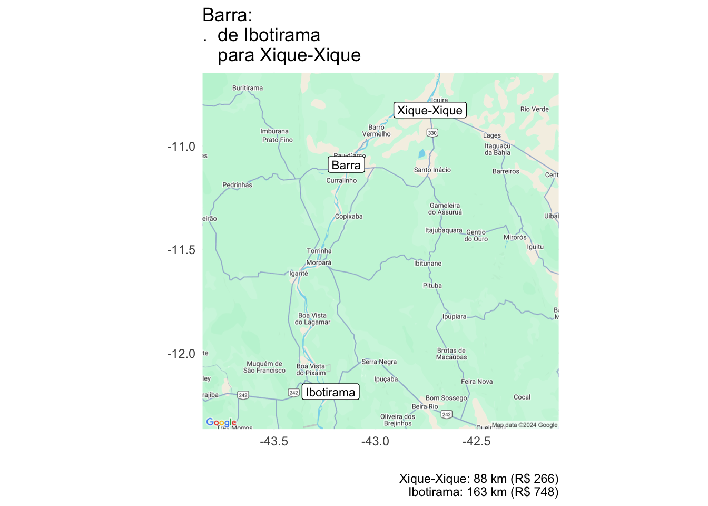
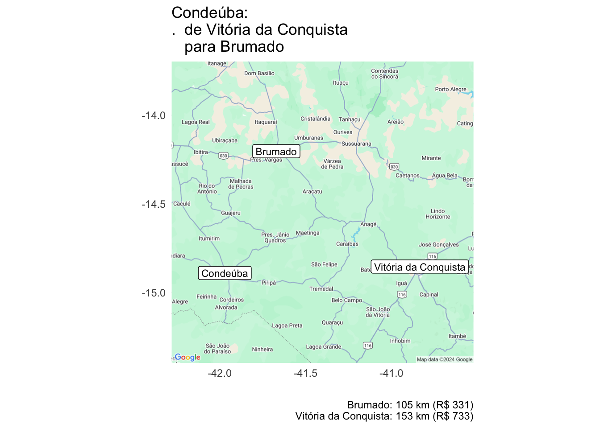
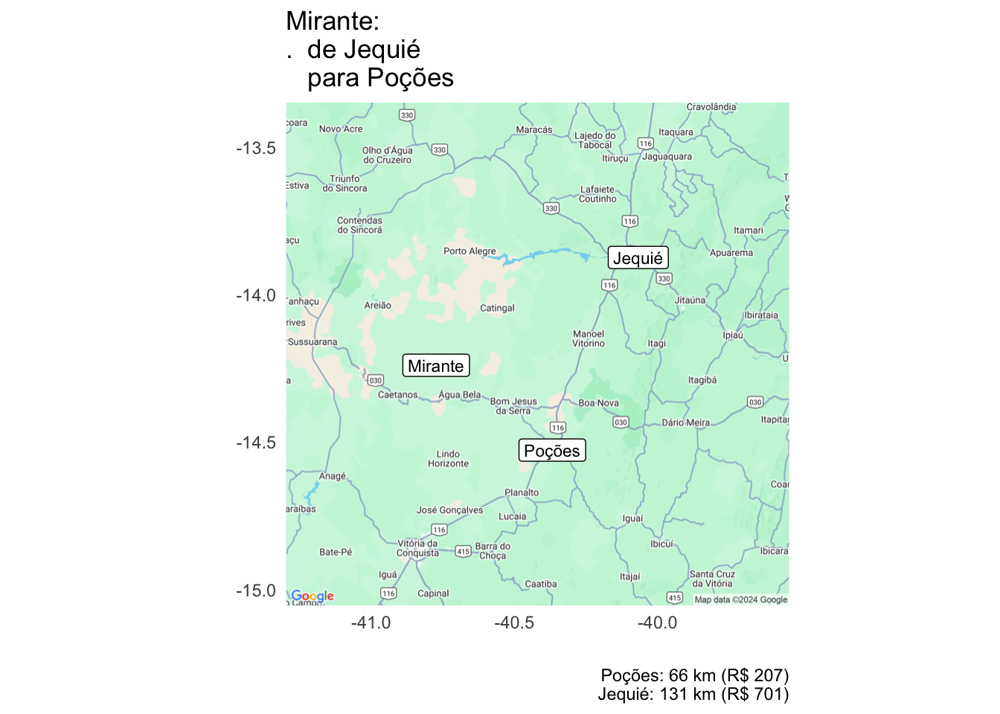
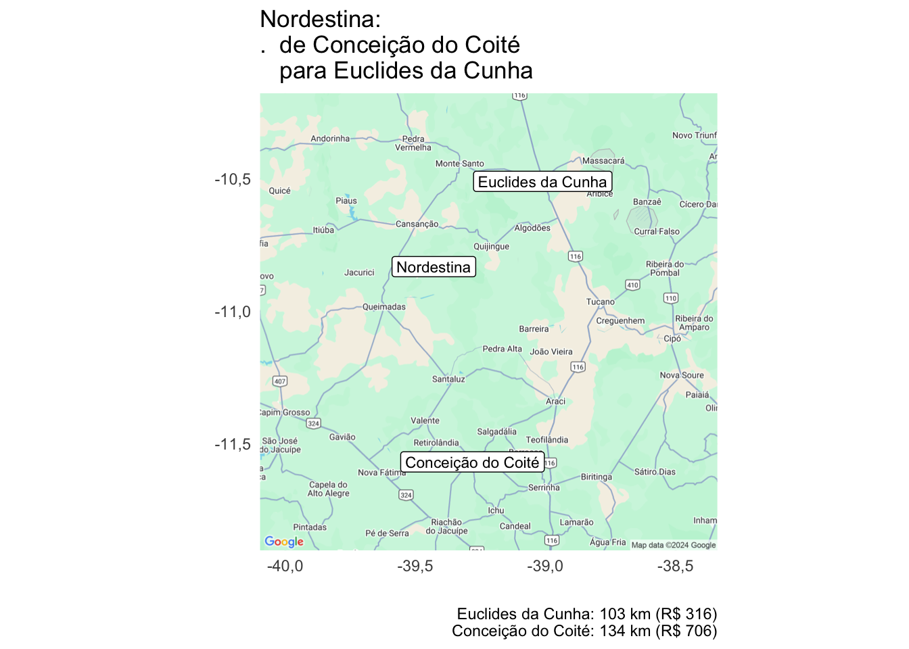
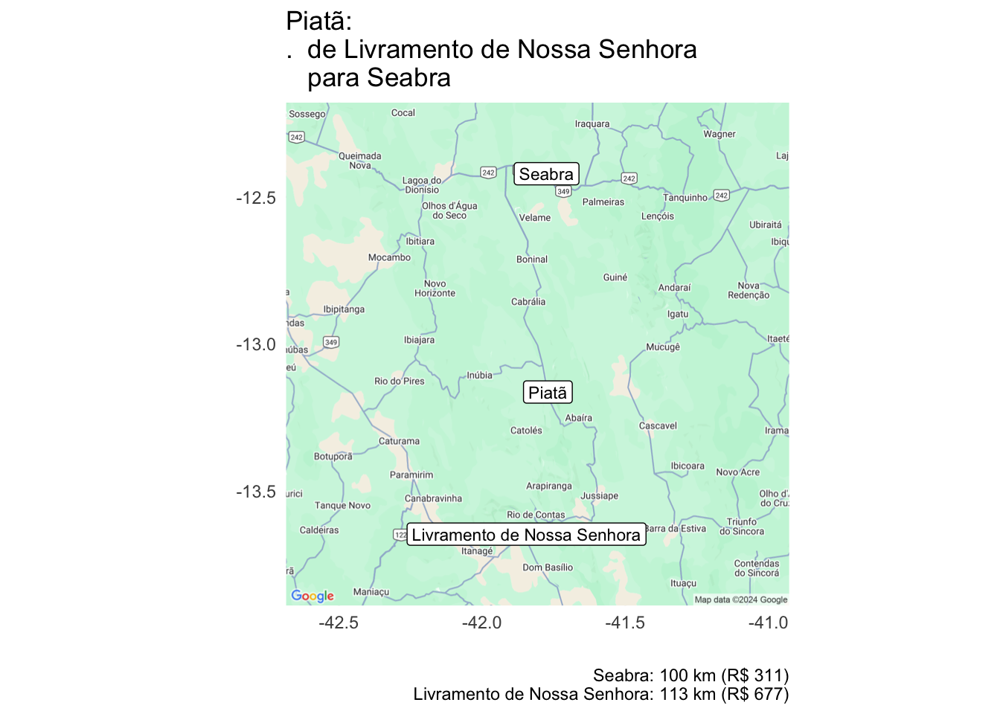
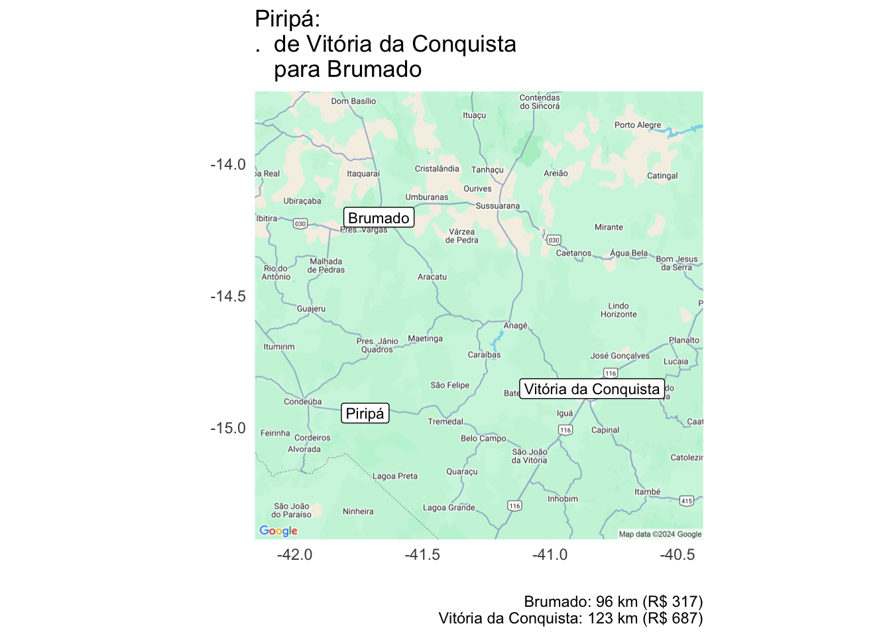
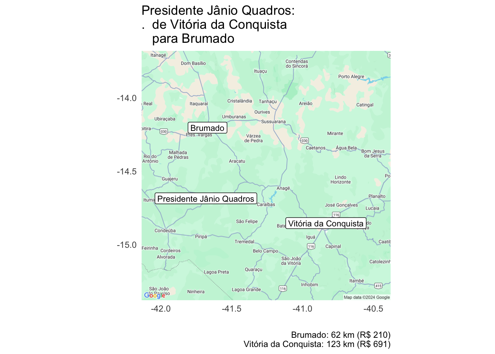
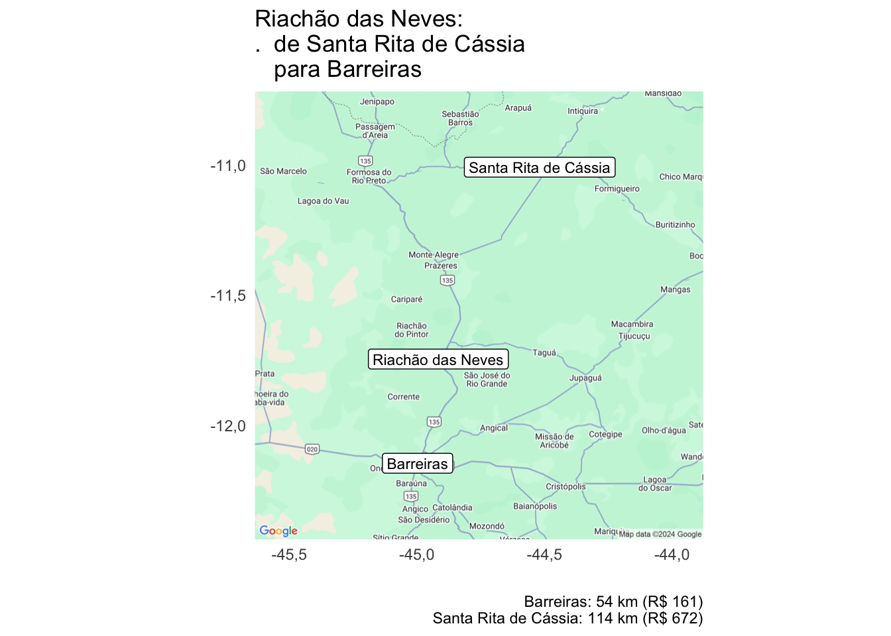

Munic: Alocação dos municípios entre as Agências da SES-BA
Eduardo Leoni - SES/BA - IBGE
munic_rmd.Rmd
uf_now <- params$uf_codigo
#plot(10^seq(1,4), (365/sqrt(10^seq(4,7)))*7)
agencias_now <- agencias_bdo%>%
filter(uf_codigo==uf_now)
distancias_ucs <- distancias_agencias_municipios_osrm%>%
left_join(agencias_municipios_diaria,
by = join_by(agencia_codigo, municipio_codigo))%>%
mutate(uc=municipio_codigo)
distancias_agencias <- distancias_agencias_osrm
nome_sigba_i <- function(x) to_title_case(gsub("_", " ", x))%>%gsub("\\bnome\\b", "", ., ignore.case=TRUE)
fmt_nums <- function(...) gt::fmt_number(..., decimals=2, dec_mark = ",", sep_mark = ".", drop_trailing_zeros = TRUE)Cálculo de custo da coleta presencial nos municípios
Premissas:
- Municípios na mesma microrregião ou região metropolitana não pagam diária, a não ser que seja exigida pernoite.
- Distâncias maiores que 110 km pagam diária, mesmo se na jurisdição da agência.
- Coleta presencial dura 2 dias.
- Quando há pernoite, são pagas 1.5 diárias, e a coleta é feita em 1 viagem(ns).
- Quando não há pernoite, são feitas 2 viagem(ns) (ida e volta).
- As viagens tem origem nas agências e destino nos municípios de coleta. Importante: o custo de combustível pode ser reduzido significativamente fazendo “roteiros”.
- Diárias são calculadas para apenas um funcionário.
ucs_now <- municipios_22%>%
sf::st_drop_geometry()%>%
filter(substr(municipio_codigo,1,2)==uf_now)%>%
left_join(agencias_bdo_mun%>%select(agencia_codigo, municipio_codigo))%>%
mutate(uc=municipio_codigo)%>%
## com agências intramunicipais tem mais de uma agência associada a município
## vamos deixar só a primeira (em ordem numérica)
group_by(municipio_codigo)%>%
arrange(agencia_codigo)%>%
slice(1)%>%
mutate(viagens=params$viagens, dias_coleta=params$dias_coleta)
#> Joining with `by = join_by(municipio_codigo)`
res <- alocar_ucs(ucs=ucs_now,
agencias=agencias_now,
## treinamento na agência
agencias_treinamento = '292740800',
distancias_agencias = distancias_agencias,
distancias_ucs =
distancias_ucs,
custo_fixo=0,
dias_treinamento=0,
dist_diaria_km = params$dist_diaria_km,
adicional_troca_jurisdicao = params$adicional_troca_jurisdicao)
ll_municipios <- pontos_municipios_sede%>%
#rename(lat=municipio_sede_lat, lon=municipio_sede_lon)%>%
left_join(municipios_22%>%sf::st_drop_geometry())
#> Joining with `by = join_by(municipio_codigo)`
resultado_ucs <- bind_rows(
res$resultado_ucs_otimo%>%mutate(plano= "otimo"),
res$resultado_ucs_jurisdicao%>%mutate(plano= "jurisdição"))%>%
group_by(uc)%>%
mutate(mudanca=length(unique(agencia_codigo))>1)
j <- res$resultado_ucs_jurisdicao%>%
left_join(agencias_bdo%>%sf::st_drop_geometry(), by="agencia_codigo")%>%
left_join(assistencias_ba)%>%
group_by(assistencia_nome, agencia_nome)%>%
mutate(municipios=1)%>%
summarise(across(c(municipios, total_diarias, custo_diarias, distancia_total_km, custo_combustivel), sum))
#> Joining with `by = join_by(agencia_codigo)`
#> `summarise()` has grouped output by 'assistencia_nome'. You can override using
#> the `.groups` argument.
gt(j%>%ungroup, groupname_col = 'assistencia_nome', rowname_col='agencia_nome')%>%
gt::summary_rows(fns = list(fn='sum', label="Total da Assistência"), fmt=~fmt_nums(.))%>%
fmt_nums()%>%
gt::cols_label_with(fn="nome_sigba_i")%>%
gt::grand_summary_rows(fns = list(fn='sum', label="Total da Superintendência")
, fmt = ~fmt_nums(.))| Municipios | Total Diarias | Custo Diarias | Distancia Total Km | Custo Combustivel | |
|---|---|---|---|---|---|
| Alagoinhas | |||||
| Alagoinhas | 11 | 1,5 | 502,5 | 1.853,62 | 1.112,17 |
| Cachoeira | 7 | 0 | 0 | 359,24 | 215,54 |
| Cruz das Almas | 7 | 0 | 0 | 1.009,56 | 605,74 |
| Esplanada | 6 | 0 | 0 | 710,68 | 426,41 |
| Feira de Santana | 11 | 0 | 0 | 1.652,6 | 991,56 |
| Ipiaú | 13 | 0 | 0 | 2.257,96 | 1.354,78 |
| Ipirá | 8 | 0 | 0 | 1.780,8 | 1.068,48 |
| Santo Antônio de Jesus | 13 | 0 | 0 | 2.334,28 | 1.400,57 |
| Valença | 12 | 0 | 0 | 2.498,68 | 1.499,21 |
| Total da Assistência | 88 | 1,5 | 502,5 | 14.457,42 | 8.674,45 |
| Guanambi | |||||
| Barreiras | 9 | 1,5 | 502,5 | 1.988,94 | 1.193,36 |
| Bom Jesus da Lapa | 6 | 1,5 | 502,5 | 1.299 | 779,4 |
| Brumado | 10 | 3 | 1.005 | 2.192,1 | 1.315,26 |
| Guanambi | 17 | 6 | 2.010 | 3.917,02 | 2.350,21 |
| Jaguaquara | 14 | 0 | 0 | 2.762,12 | 1.657,27 |
| Jequié | 10 | 4,5 | 1.507,5 | 1.983,96 | 1.190,38 |
| Livramento de Nossa Senhora | 13 | 4,5 | 1.507,5 | 3.137,48 | 1.882,49 |
| Santa Maria da Vitória | 10 | 1,5 | 502,5 | 2.107,24 | 1.264,34 |
| Santa Rita de Cássia | 5 | 4,5 | 1.507,5 | 1.078,12 | 646,87 |
| Total da Assistência | 94 | 27 | 9.045 | 20.465,98 | 12.279,59 |
| Jeremoabo | |||||
| Cipó | 5 | 0 | 0 | 476,52 | 285,91 |
| Conceição do Coité | 7 | 1,5 | 502,5 | 1.191,84 | 715,1 |
| Euclides da Cunha | 7 | 0 | 0 | 1.630,28 | 978,17 |
| Jeremoabo | 5 | 0 | 0 | 944,64 | 566,78 |
| Paulo Afonso | 6 | 6 | 2.010 | 1.354,54 | 812,72 |
| Riachão do Jacuípe | 8 | 0 | 0 | 1.121,64 | 672,98 |
| Ribeira do Pombal | 9 | 0 | 0 | 1.897,8 | 1.138,68 |
| Serrinha | 6 | 0 | 0 | 517,56 | 310,54 |
| Total da Assistência | 53 | 7,5 | 2.512,5 | 9.134,82 | 5.480,89 |
| Salvador | |||||
| Camaçari | 5 | 0 | 0 | 710,2 | 426,12 |
| Salvador 1 | 2 | 0 | 0 | 144,48 | 86,69 |
| Salvador 2 | 1 | 0 | 0 | 62,08 | 37,25 |
| Santo Amaro | 6 | 0 | 0 | 695,92 | 417,55 |
| São Francisco do Conde | 3 | 0 | 0 | 197,52 | 118,51 |
| Total da Assistência | 17 | 0 | 0 | 1.810,2 | 1.086,12 |
| Senhor do Bonfim | |||||
| Ibotirama | 10 | 9 | 3.015 | 2.630,76 | 1.578,46 |
| Irecê | 12 | 0 | 0 | 1.559,64 | 935,78 |
| Itaberaba | 10 | 3 | 1.005 | 2.338,52 | 1.403,11 |
| Jacobina | 13 | 1,5 | 502,5 | 2.458,32 | 1.474,99 |
| Juazeiro | 5 | 1,5 | 502,5 | 1.236,38 | 741,83 |
| Morro do Chapéu | 10 | 0 | 0 | 2.494,32 | 1.496,59 |
| Remanso | 3 | 1,5 | 502,5 | 518,5 | 311,1 |
| Seabra | 11 | 3 | 1.005 | 2.645,38 | 1.587,23 |
| Senhor do Bonfim | 9 | 0 | 0 | 1.210,8 | 726,48 |
| Xique-Xique | 4 | 0 | 0 | 885,76 | 531,46 |
| Total da Assistência | 87 | 19,5 | 6.532,5 | 17.978,38 | 10.787,03 |
| Vitória da Conquista | |||||
| Eunápolis | 5 | 0 | 0 | 716,24 | 429,74 |
| Ilhéus | 13 | 1,5 | 502,5 | 3.519,98 | 2.111,99 |
| Itabuna | 13 | 1,5 | 502,5 | 3.044,84 | 1.826,9 |
| Itamaraju | 5 | 0 | 0 | 1.309,36 | 785,62 |
| Itapetinga | 9 | 0 | 0 | 1.895,36 | 1.137,22 |
| Porto Seguro | 3 | 0 | 0 | 369,96 | 221,98 |
| Poções | 7 | 0 | 0 | 1.220,16 | 732,1 |
| Teixeira de Freitas | 8 | 0 | 0 | 2.415,56 | 1.449,34 |
| Vitória da Conquista | 15 | 6 | 2.010 | 4.020,86 | 2.412,52 |
| Total da Assistência | 78 | 9 | 3.015 | 18.512,32 | 11.107,39 |
| Total da Superintendência | 417 | 64,5 | 21.607,5 | 82.359,12 | 49.415,47 |
toexport <- res$resultado_ucs_jurisdicao%>%
rename(municipio_codigo=uc)%>%
left_join(agencias_bdo%>%sf::st_drop_geometry(), by = join_by(agencia_codigo))%>%
left_join(municipios_22%>%select(municipio_codigo, municipio_nome), by = join_by(municipio_codigo))%>%
left_join(assistencias_ba, by = join_by(agencia_codigo))%>%
transmute(
assistencia_nome,
agencia_codigo, agencia_nome,
municipio_nome, municipio_codigo,
distancia_km, duracao_horas, diaria, meia_diaria, trechos, total_diarias, custo_diarias, distancia_total_km, custo_combustivel, custo_horas_viagem, custo_deslocamento)
export_dir <- file.path(here::here("vignettes", "articles", "munic"))
dir.create(export_dir, recursive = TRUE, showWarnings = FALSE)
export_path <- file.path(export_dir,paste0("munic_", params$uf_codigo, "_", format(Sys.time(), "%Y%m%d_%H"), ".xlsx"))
toexport_l <- lapply(toexport%>%split(.$assistencia_nome), function(x) janitor::remove_constant(x))
sigba::excel(toexport_l, filename = export_path)
#> Loading required package: openxlsxOpcional: Sugestões de alteração de agência de coleta.
O custo de deslocamento inclui as diárias, combustível, e custo adicional por hora de viagem correspondente a R$10 por hora. Só são listadas trocas que economizariam no mínimo R$300 no custo de deslocamento para o município.
Observação: Se houver interesse em alguma dessas trocas de agência de coleta será necessário recalcular os custos apresentados anteriormente.
mudancas <- ll_municipios%>%
sf::st_drop_geometry()%>%
inner_join(resultado_ucs%>%filter(mudanca), by=c("municipio_codigo"="uc"))%>%
left_join(agencias_bdo%>%select(agencia_codigo,
agencia_nome,
agencia_lat,
agencia_lon))%>%
mutate(uc_lat=municipio_sede_lat, uc_lon=municipio_sede_lon)
#> Joining with `by = join_by(agencia_codigo)`
gt(
mudancas%>%
select(agencia_nome, municipio_nome, distancia_km, custo_deslocamento, plano)%>%
tidyr::pivot_wider(names_from = c("plano"), id_cols = c("municipio_nome"), values_from=c("agencia_nome", "distancia_km", "custo_deslocamento"))#%>%arrange(agencia_nome_otimo)
)%>%
fmt_nums()%>%
gt::cols_label_with(fn="nome_sigba_i")| Municipio | Agencia Otimo | Agencia Jurisdição | Distancia Km Otimo | Distancia Km Jurisdição | Custo Deslocamento Otimo | Custo Deslocamento Jurisdição |
|---|---|---|---|---|---|---|
| Barra | Xique-Xique | Ibotirama | 88,02 | 163,01 | 266,05 | 748,31 |
| Condeúba | Brumado | Vitória da Conquista | 105,24 | 152,6 | 330,58 | 733,02 |
| Mirante | Poções | Jequié | 65,8 | 130,9 | 207,12 | 701,18 |
| Nordestina | Euclides da Cunha | Conceição do Coité | 103,35 | 133,52 | 316,04 | 705,52 |
| Piatã | Seabra | Livramento de Nossa Senhora | 99,74 | 112,92 | 311,38 | 677,4 |
| Piripá | Brumado | Vitória da Conquista | 96,25 | 122,56 | 317,4 | 687,17 |
| Presidente Jânio Quadros | Brumado | Vitória da Conquista | 61,98 | 122,58 | 209,95 | 690,6 |
| Riachão das Neves | Barreiras | Santa Rita de Cássia | 54,21 | 113,92 | 160,5 | 671,8 |
if (nrow(mudancas)>0) {
mudancas_l <- mudancas%>%group_split(municipio_nome)
for (i in seq_along(mudancas_l)) {
dnow <- mudancas_l[[i]]%>%
arrange(custo_deslocamento)%>%
mutate(title=glue::glue("{municipio_nome}:\n. de {agencia_nome[2]}\n para {agencia_nome[1]}"),
subtitle=glue::glue("{agencia_nome}: {round(distancia_km)} km (R$ {round(custo_deslocamento)})"))
p <- map_uc_agencias(dnow) +
geom_label(aes(x=municipio_sede_lon, y=municipio_sede_lat, label=municipio_nome), data=dnow[1,], size=3) +
geom_label(aes(x=agencia_lon, y=agencia_lat, label=agencia_nome), data=dnow, size=3) +
theme_minimal() +
labs(title = dnow$title[1], caption = paste(dnow$subtitle, collapse='\n'), x="",y="")+
guides(color="none")
print(p)
}
}
Apêndice Técnico
O que temos é um problema de alocação ótima de Unidades Primárias de Amostragem (UPAs) a agências, com o objetivo de minimizar os custos totais, incluindo custos de deslocamento e custos fixos associados a cada agência. O modelo de otimização é baseado extensamente em “The Warehouse Location Problem”, de Dirk Schumacher, https://dirkschumacher.github.io/ompr/articles/problem-warehouse-location.html. Trata-se de um problema comum em logística que busca determinar a melhor localização para instalações de modo a minimizar custos.
Tendo a localização das UPAs e a localização das agências, a tarefa é decidir que agências incluir/treinar/contratar, e que UPAs vão ser alocadas a quais agências.
Ou seja, temos que decidir, ao mesmo tempo, (1) que agências treinar, e (2) distribuição de UPAs por agência.
Começamos com um conjunto de UPAs e um conjunto de possíveis agências que poderiam ser treinadas. Além disso, temos uma função de custo que nos fornece o custo de deslocamento de uma agência até uma UPA. Ademais, há um custo fixo (incluindo custo de treinamento, entre outros) associado a cada agência, caso ela seja selecionada para a coleta. Agências com número pequeno de UPAs podem ser inviáveis. Agências no interior com número grande de UPAs podem também ser inviáveis. A solução tem que ter no mínimo min_upas= por agência treinada. Observação, ao se permitir a coleta “semi-centralizada”, não há limite para número de UPAs nas agências listadas.
Para modelar esta situação, utilizamos duas variáveis de decisão:
: variável binária que é 1 se a UPA é alocada à agência , e 0 caso contrário.
: variável binária que é 1 se a agência é selecionada para realizar a coleta, e 0 caso contrário.
$$ \begin{equation*} \begin{array}{ll@{}ll} \text{minimizar} & \displaystyle\sum\limits_{i=1}^{n}\sum\limits_{j=1}^{m}\operatorname{custo\_deslocamento}_{i,j} \cdot x_{i, j} + \sum\limits_{j=1}^{m}\operatorname{custo\_fixo}_{j} \cdot y_{j}& &\\ \text{satisfazendo} & \displaystyle\sum\limits_{j=1}^{m} x_{i, j} = 1 & i=1 ,\ldots, n&\\ & \displaystyle x_{i, j} \leq y_j, & i=1 ,\ldots, n & j=1 ,\ldots, m&\\ & x_{i,j} \in \{0,1\} &i=1 ,\ldots, n, & j=1 ,\ldots, m \\ & y_{j} \in \{0,1\} &j=1 ,\ldots, m& \\ & \operatorname{(opcional)} \sum\limits_{i=1}^{n}{x}_{i,j} >= ( \operatorname{min\_upas} \cdot y_{j}) & j=1 ,\ldots, m& \\ & \operatorname{(opcional)} \sum\limits_{i=1}^{n}{x}_{i,j} <= \operatorname{max\_upas}_{j} & j=1 ,\ldots, m& \end{array} \end{equation*} $$